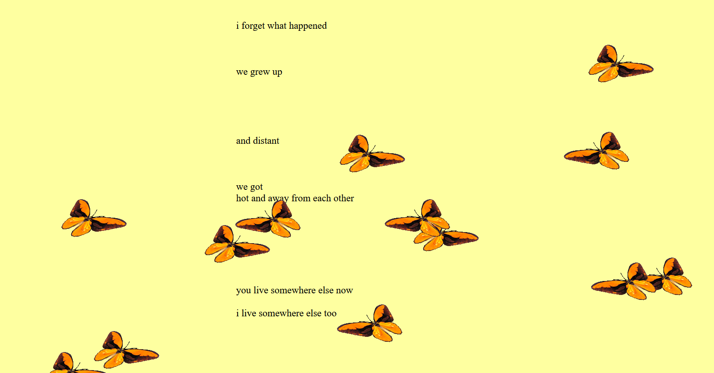
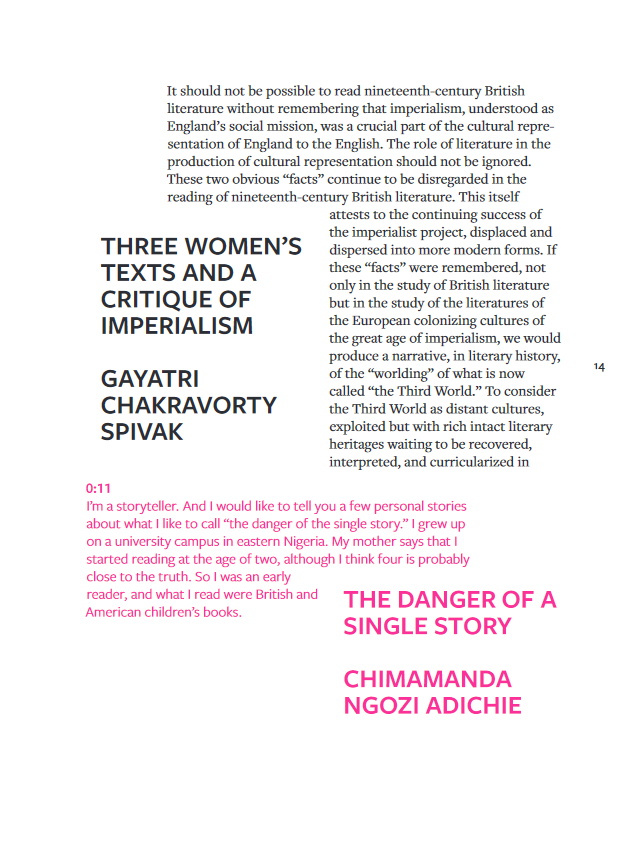
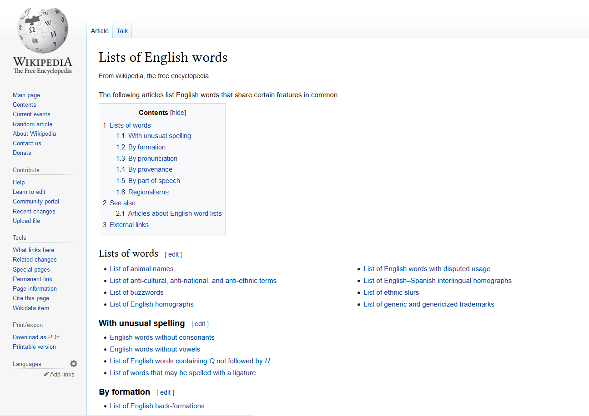
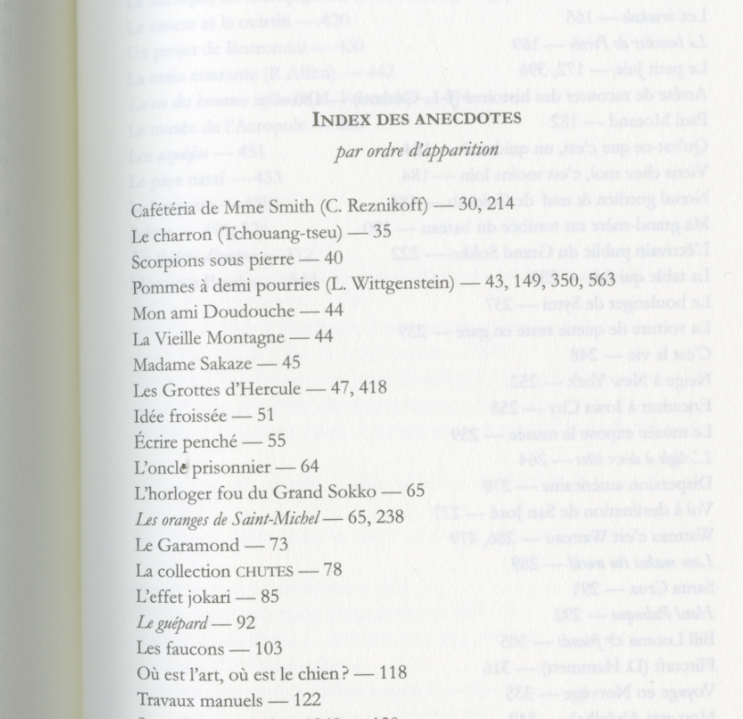
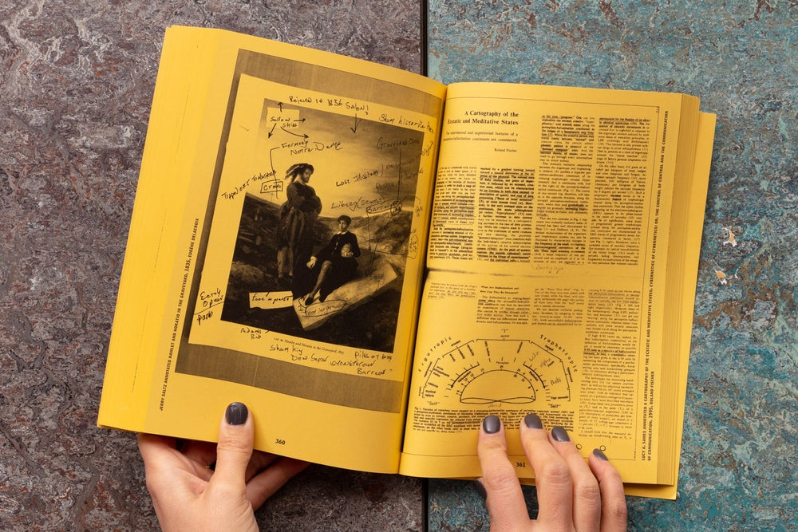
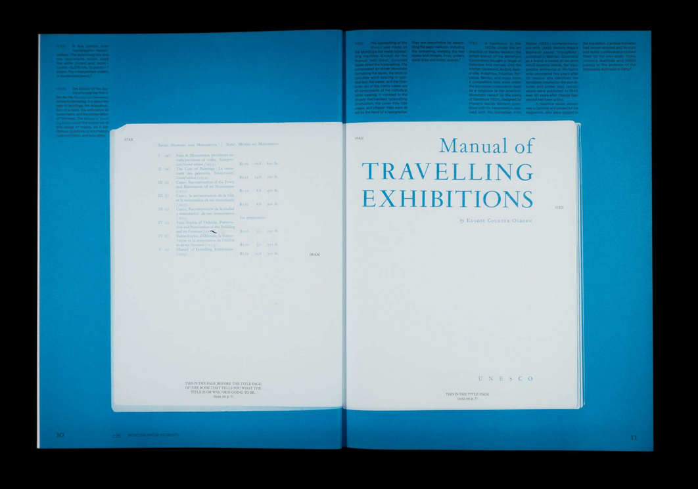
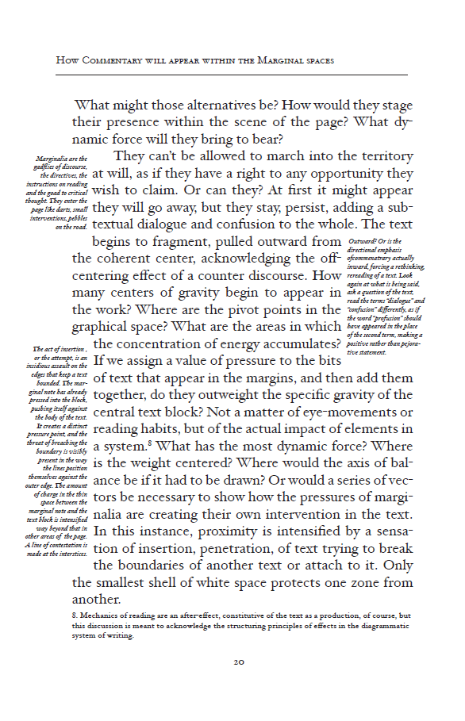
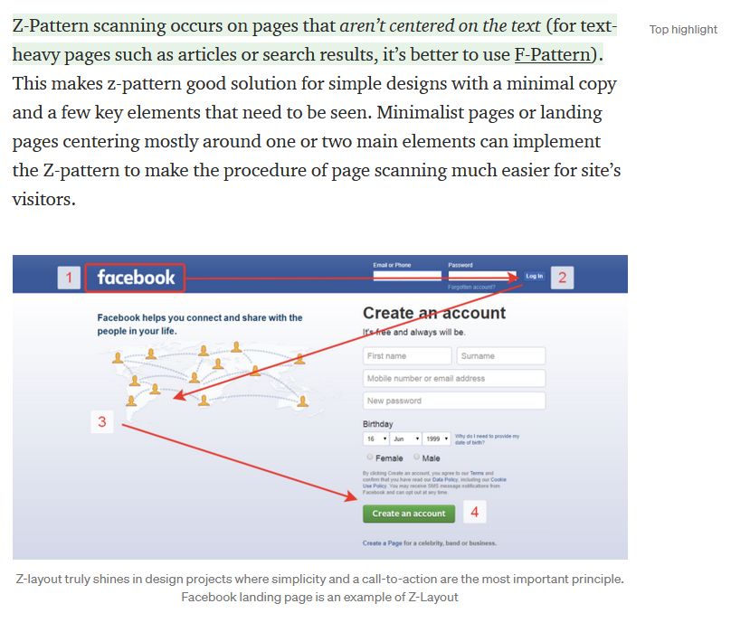
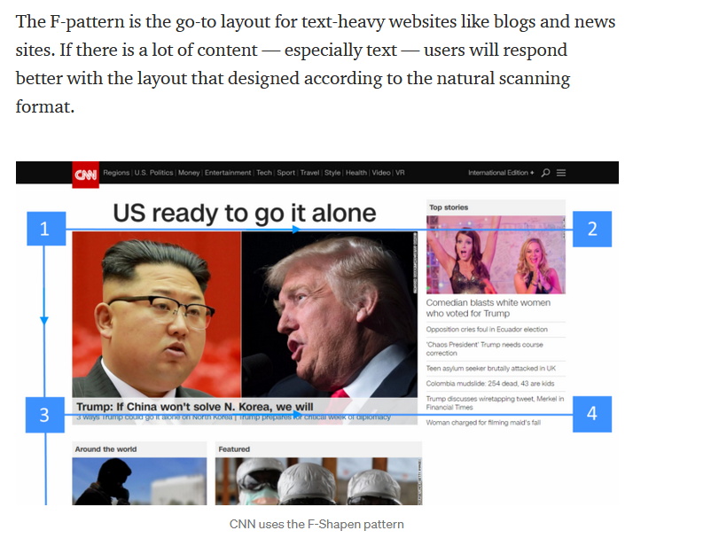

I do not know yet what my question is, but here is a list of words and images from which I wish to start from.
Words:
non-linearity
fragment
footnote
index
compendium
redirection
hyperlink
paratexte
annotation
words in space
encyclopedia
knowledge
citation / quote
non-directive
ways of reading the web page
From the website Reading Machines by Tiger Dingsun
a butterfly goes by Larissa Pham
A Degree of Rage, History, Her by Tiger Dingsun
Lists of English words on Wikipedia
Index of anecdotes in Le cours de Pise by Emmanuel Hocquard
The Annotated Reader by Ryan Gander
Re-reading the Manual Of Travelling Exhibitions, 2018
Diagrammatic Writing by Joanna Drucker, 2013
